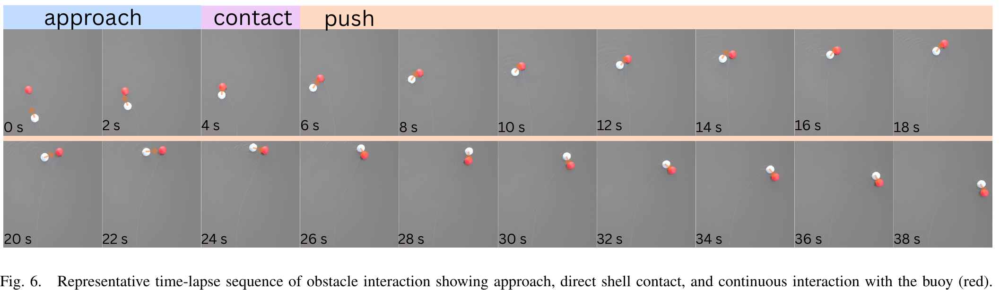

Experiments
Terrestrial, Aquatic, and Transitional Locomotion
We first evaluated whether the shared internal actuation mechanism supported locomotion across terrestrial and aquatic environments. Fig. 4 shows representative time-lapse sequences and reconstructed planar trajectories on the ground and at the water surface. During terrestrial locomotion, MARBLE traveled 10.60 m over 14.00 s, reaching a mean speed of 0.745 ± 0.163 m/s and a maximum speed of 1.025 m/s, while following an approximately closed spatial trajectory. On water, MARBLE traveled 5.24 m over 14.00 s, with a mean speed of 0.375 ± 0.059 m/s and a maximum speed of 0.488 m/s. These results demonstrate sustained terrestrial and aquatic locomotion without introducing a separate aquatic propulsion mechanism.


We next commanded MARBLE to enter the water directly from land. The robot progressed continuously from terrestrial rolling to water-surface propulsion without mechanical reconfiguration or switching propulsion hardware. During the transition, it traveled 5.21 m over 23.93 s with a mean speed of 0.215 ± 0.146 m/s and a maximum speed of 0.840 m/s. The reduced mean speed occurred during shoreline entry, where the robot encountered changing contact and buoyancy conditions. The complete sequence shows continuous progression from terrestrial rolling to sustained aquatic locomotion using the same internal mass actuation.
Omnidirectional Velocity Characterization
We then characterized MARBLE’s planar mobility across different travel directions and compared the geometric controller (GC) with the learned controller (LC). Commands were specified in the operator frame and transformed into the rotating body frame using the measured orientation, as described in Sec. IV.


Fig. 5 presents segmented velocity responses collected across different commanded headings. The distribution of velocity vectors over the full 360° range demonstrated that MARBLE’s actuation mechanism can produce planar motion across arbitrary directions without a preferred fixed heading. This capability arose from coordinated mass redistribution along the three mutually orthogonal body axes.
We further compared the two controllers during water-surface locomotion. The learned controller reached a mean speed of 0.348 ± 0.114 m/s and a maximum speed of 0.592 m/s. The geometric controller reached a mean speed of 0.252 ± 0.088 m/s and a maximum speed of 0.461 m/s. The learned controller recording covered 94.10 m over 270.37 s, while the geometric controller covered 63.67 m over 252.20 s. These results show that both controllers produced omnidirectional aquatic locomotion, with the learned controller reaching higher translational speeds.
Object Interaction with Direct Shell Contact
The spherical morphology of MARBLE is designed to accommodate environmental contact without exposing the active locomotion mechanisms. We evaluated this property by commanding MARBLE to continuously push a buoy and allowing the shell and passive fins to contact the obstacle, as shown in Fig. 6.

TODO: set chip times
- Fill each chip's
data-seek(seconds in the encoded clip) and its displayed time - Fig. 6 phases: approach, contact, push
During contact, the buoy changed the instantaneous contact location and perturbed the orientation and motion of the robot. MARBLE continued actuating its internal masses throughout the interaction and subsequently disengaged from the buoy and resumed locomotion. The active sliders, motors, and transmissions remain enclosed within the shell throughout the interaction. Fig. 6 shows the progression from approach through shell contact and subsequent recovery. These experiments illustrate how the spherical exterior of MARBLE can serve as the contact interface during obstacle interaction while the locomotion mechanism remains internal.
Additional Trials
TODO: additional trials carousel
- One clip per slide: media/videos/trial-01.mp4 … trial-04.mp4 (add or remove slides as needed)
- Candidates from the paper: heterogeneous terrestrial surfaces, water-surface runs, land-water transitions, obstacle contact
- Short label per clip; rename this heading or delete the section if unused